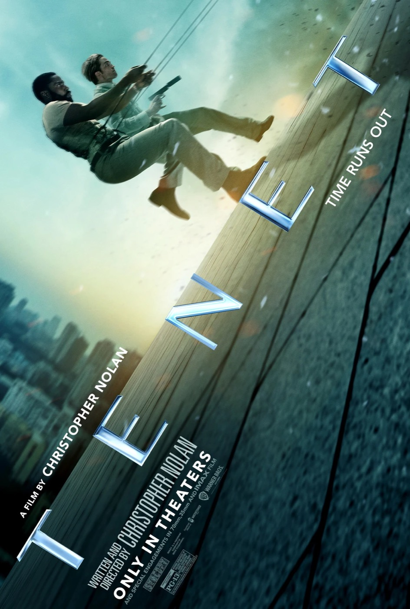
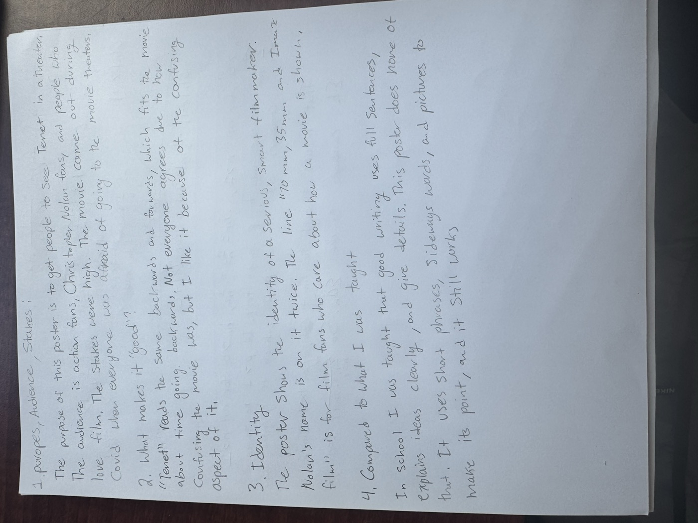

Free Writing for MP2
My example of good everyday writing, the Tenet poster, and my handwritten notes about it.
Free writing for MP2. This is my free writing about the poster for Christopher Nolan’s Tenet (2020). It connects to the learning outcome Variation across Contexts. The poster uses very few words, and it uses layout, images, and double meanings like “Time runs out” to persuade its audience. These patterns are very different from academic writing, but they work in an advertising context. My notes also show how my own interest in film shapes what I think good writing is.

